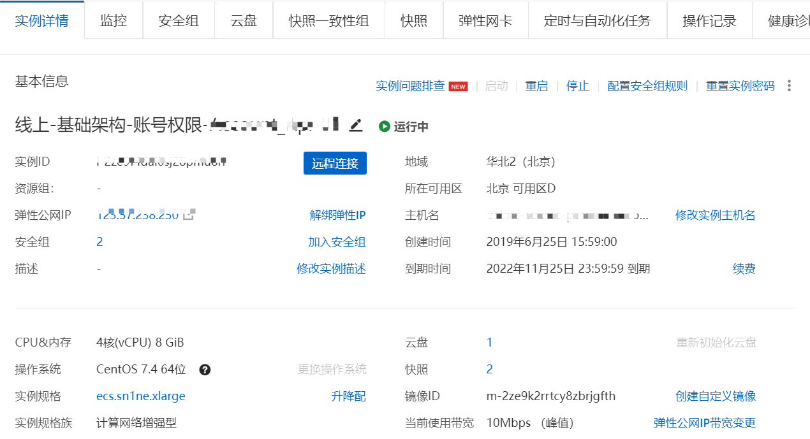
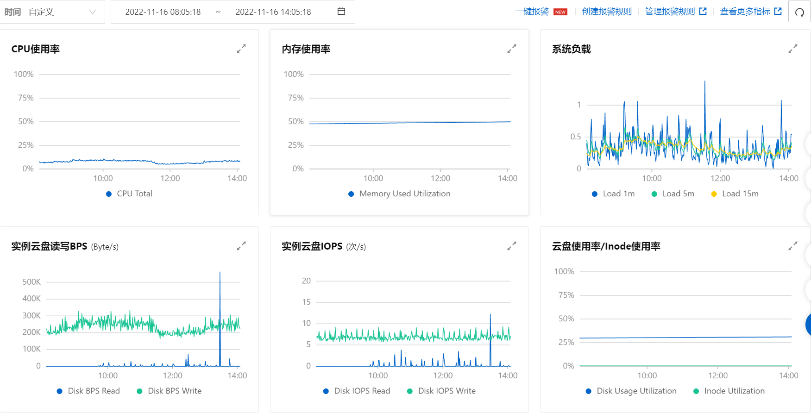
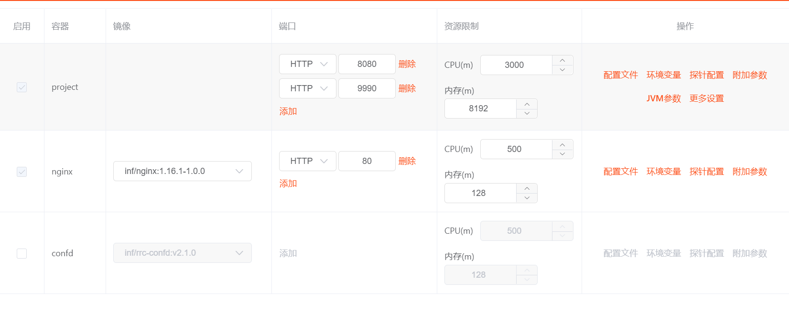
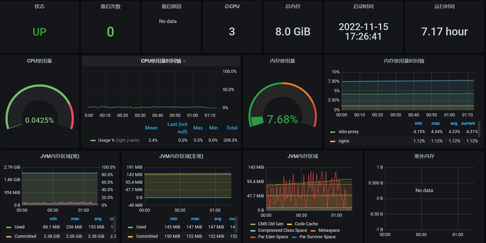
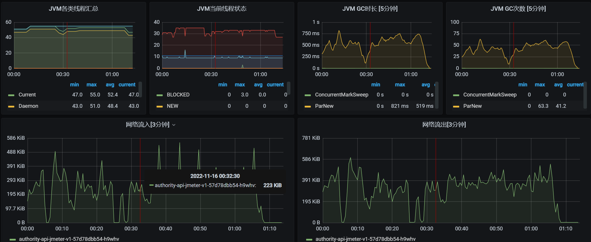
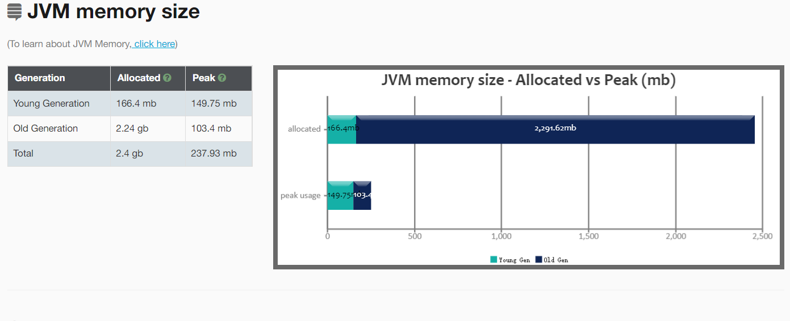
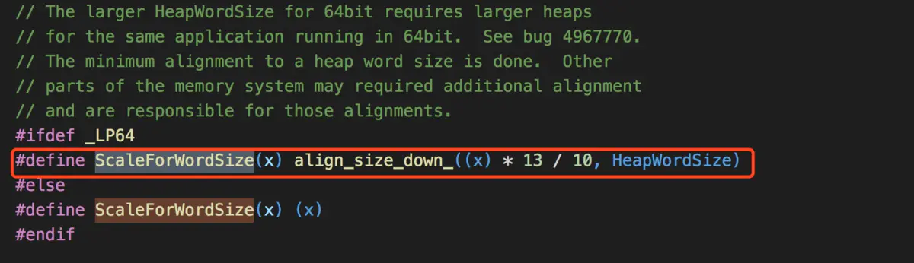
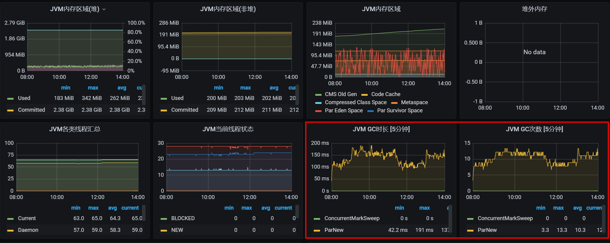
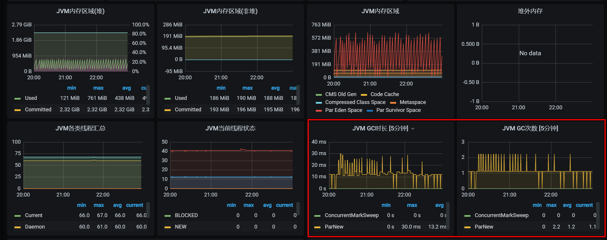

服务器从阿里云ECS迁移到58容器，为了保证迁移的顺利，在58容器做了一个简单的压测，发现了年轻代GC频繁的问题，在此做一下记录。
项目实战-年轻代GC频繁
环境配置及相关监控
阿里云ECS配置

阿里云ECS监控

58容器

压测
基于日常的NGINX日志重放做简单压测，58容器启动了两个POD，单台QPS在100/s左右。压测1小时之后的argus监控显示如下：


现像
5分钟之内的GC次数最高达到了63次，平均GC次数达到了41.2次。而GC时长最长高达812ms，平均GC时长519ms。为什么会频繁的发生GC呢。
分析gc日志：GC分析官网，发现了一个惊讶的地方，如下：

新生代的内存竟然只有166M。
查看项目的jvm参数配置：
work 45 14 24 00:28 ? 00:00:30 /usr/local/openjdk-8/bin/java -Dsun.misc.URLClassPath.disableJarChecking=true -DLOG_PATH=/mnt/logs/authority-api-jmeter -server -XX:MaxRAMPercentage=30.0 -XX:InitialRAMPercentage=30.0 -XX:MinRAMPercentage=30.0 -verbose:gc -XX:+UseParNewGC -XX:+PrintHeapAtGC -XX:+PrintGCDetails -XX:ConcGCThreads=2 -XX:GCLogFileSize=50M -XX:+PrintGCDateStamps -XX:+PrintGCTimeStamps -XX:+UseConcMarkSweepGC -XX:ParallelGCThreads=2 -XX:NumberOfGCLogFiles=1 -XX:+UseGCLogFileRotation -XX:+ScavengeBeforeFullGC -XX:+CMSScavengeBeforeRemark -XX:+CMSParallelRemarkEnabled -XX:+HeapDumpOnOutOfMemoryError -XX:+PrintGCApplicationStoppedTime -Dsun.net.httpserver.maxReqTime=30 -Dsun.net.httpserver.maxRspTime=30 -XX:CMSInitiatingOccupancyFraction=70 -Xloggc:/mnt/logs/authority-api-jmeter/jvm/gc.log -XX:HeapDumpPath=/mnt/logs/authority-api-jmeter/jvm -javaagent:/usr/local/jmx-exporter/jmx_prometheus_javaagent-0.14.0.jar=9990:/usr/local/jmx-exporter/prometheus-jmx-config.yaml -XX:+UnlockExperimentalVMOptions -XX:+UseCGroupMemoryLimitForHeap -jar /home/work/www/authority-api-jmeter/lib/authority-api.jar --server.address=0.0.0.0 --spring.config.location=/home/work/www/authority-api-jmeter/conf/ --spring.profiles.active=production --logging.config=/home/work/www/authority-api-jmeter/conf/log4j2.yml容器模式下，我们可以给每个JVM实例所属的POD分配任意大小的内存上限。比如，给每个账户服务分配4G，给每个支付服务分配8G。如此一来，启动脚本就不好写成通用的了，指定3G也不是，指定6G也不是。
但是有了这三个新增参数MaxRAMPercentage、InitialRAMPercentage、MinRAMPercentage，我们就可以在通用的启动脚本中指定堆的内存量百分比（-XX:MaxRAMPercentage=30 -XX:InitialRAMPercentage=30 -XX:MinRAMPercentage=30）。
对于我们的8G内存，按照30%分配的话，我们就相当于设置了堆内存-Xmx2.4G -Xms2.4G，按照新生代与老年代的默认比例1：2来说。新生代的大小应该为0.8G，老年代1.6G。
通过jmap -heap显示Java堆的如下信息：
work@authority-api-jmeter-v1-65c64db6c7-74z8p:~$ jmap -heap 45
Attaching to process ID 45, please wait...
Debugger attached successfully.
Server compiler detected.
JVM version is 25.222-b10
using parallel threads in the new generation.
using thread-local object allocation.
Concurrent Mark-Sweep GC
Heap Configuration:
MinHeapFreeRatio = 40
MaxHeapFreeRatio = 70
MaxHeapSize = 2577399808 (2458.0MB)
NewSize = 174456832 (166.375MB)
MaxNewSize = 174456832 (166.375MB)
OldSize = 2402942976 (2291.625MB)
NewRatio = 2
SurvivorRatio = 8
MetaspaceSize = 21807104 (20.796875MB)
CompressedClassSpaceSize = 1073741824 (1024.0MB)
MaxMetaspaceSize = 17592186044415 MB
G1HeapRegionSize = 0 (0.0MB)
Heap Usage:
New Generation (Eden + 1 Survivor Space):
capacity = 157024256 (149.75MB)
used = 64436528 (61.45146179199219MB)
free = 92587728 (88.29853820800781MB)
41.03603458563752% used
Eden Space:
capacity = 139591680 (133.125MB)
used = 49245504 (46.96417236328125MB)
free = 90346176 (86.16082763671875MB)
35.27825154049296% used
From Space:
capacity = 17432576 (16.625MB)
used = 15191024 (14.487289428710938MB)
free = 2241552 (2.1377105712890625MB)
87.14159054863721% used
To Space:
capacity = 17432576 (16.625MB)
used = 0 (0.0MB)
free = 17432576 (16.625MB)
0.0% used
concurrent mark-sweep generation:
capacity = 2402942976 (2291.625MB)
used = 52197864 (49.779762268066406MB)
free = 2350745112 (2241.8452377319336MB)
2.1722473034665972% used
30750 interned Strings occupying 3569720 bytes.可以看到实际新生代的大小与日志分析结果相同为166.4 mb（Eden133.125MB + 2 Survivor Space16.625MB）
经过查找资料发现：新生代的大小为：
max_heap/(NewRatio+1) 和 ScaleForWordSize(young_gen_per_worker * parallel_gc_threads) 中较小的那个
max_heap/(NewRatio+1) 这个我们都了解，就是按照 默认NewRatio 为2来计算，新生代的大小应该为0.8G。

而ScaleForWordSize最终的计算公式是
机器硬件决定(x86位64M) * 并行线程数(-XX:ParallelGCThreads指定的值) * 13 / 10由于我们指定了-XX:ParallelGCThreads=2,按照这个公式64M * 2 * 13 / 10=166.4M。
所以二者之间取小值，我们最终的新生代的大小为166.4M。验证了现像。
总结：所以我们在使用CMS收集器模式时，一定要指定新生代的大小，完整参数如下：
-XX:+UseConcMarkSweepGC -XX:NewRatio=2 -XX:ParallelGCThreads=2 -XX:CICompilerCount=2 调整
发现生产环境很多服务都存在此问题


打印heap参数：
work@authority-api-v1-dc978c6b5-kb8f9:~$ jmap -heap 47
Attaching to process ID 47, please wait...
Debugger attached successfully.
Server compiler detected.
JVM version is 25.222-b10
using parallel threads in the new generation.
using thread-local object allocation.
Concurrent Mark-Sweep GC
Heap Configuration:
MinHeapFreeRatio = 40
MaxHeapFreeRatio = 70
MaxHeapSize = 2577399808 (2458.0MB)
NewSize = 859111424 (819.3125MB)
MaxNewSize = 859111424 (819.3125MB)
OldSize = 1718288384 (1638.6875MB)
NewRatio = 2
SurvivorRatio = 8
MetaspaceSize = 21807104 (20.796875MB)
CompressedClassSpaceSize = 1073741824 (1024.0MB)
MaxMetaspaceSize = 17592186044415 MB
G1HeapRegionSize = 0 (0.0MB)
Heap Usage:
New Generation (Eden + 1 Survivor Space):
capacity = 773259264 (737.4375MB)
used = 594538992 (566.9965667724609MB)
free = 178720272 (170.44093322753906MB)
76.88740629171434% used
Eden Space:
capacity = 687407104 (655.5625MB)
used = 593315240 (565.8295059204102MB)
free = 94091864 (89.73299407958984MB)
86.31206115670285% used
From Space:
capacity = 85852160 (81.875MB)
used = 1223752 (1.1670608520507812MB)
free = 84628408 (80.70793914794922MB)
1.4254178345658397% used
To Space:
capacity = 85852160 (81.875MB)
used = 0 (0.0MB)
free = 85852160 (81.875MB)
0.0% used
concurrent mark-sweep generation:
capacity = 1718288384 (1638.6875MB)
used = 104572760 (99.72835540771484MB)
free = 1613715624 (1538.9591445922852MB)
6.085867830670268% used
52552 interned Strings occupying 5734440 bytes.
work@authority-api-v1-dc978c6b5-kb8f9:~$确认堆新生代已经调整为819.3125MB。
后续
今天又收到了其他部门反馈接口偶发超时问题，下午将容器服务引入了Wtrace，等后续出现接口超时问题时来查看耗时原因，同时依然查看JVM参数，做响应的优化。查看内存分配情况
[~]$ jmap -heap 24433
Attaching to process ID 24433, please wait...
Debugger attached successfully.
Server compiler detected.
JVM version is 25.74-b02
using parallel threads in the new generation.
using thread-local object allocation.
Concurrent Mark-Sweep GC
Heap Configuration:
MinHeapFreeRatio = 40
MaxHeapFreeRatio = 70
MaxHeapSize = 2147483648 (2048.0MB)
NewSize = 357892096 (341.3125MB)
MaxNewSize = 715784192 (682.625MB)
OldSize = 715849728 (682.6875MB)
NewRatio = 2
SurvivorRatio = 8
MetaspaceSize = 21807104 (20.796875MB)
CompressedClassSpaceSize = 1073741824 (1024.0MB)
MaxMetaspaceSize = 268435456 (256.0MB)
G1HeapRegionSize = 0 (0.0MB)
Heap Usage:
New Generation (Eden + 1 Survivor Space):
capacity = 322109440 (307.1875MB)
used = 226564424 (216.06867218017578MB)
free = 95545016 (91.11882781982422MB)
70.33771627431969% used
Eden Space:
capacity = 286326784 (273.0625MB)
used = 221015664 (210.77696228027344MB)
free = 65311120 (62.28553771972656MB)
77.19000678609235% used
From Space:
capacity = 35782656 (34.125MB)
used = 5548760 (5.291709899902344MB)
free = 30233896 (28.833290100097656MB)
15.506842197516026% used
To Space:
capacity = 35782656 (34.125MB)
used = 0 (0.0MB)
free = 35782656 (34.125MB)
0.0% used
concurrent mark-sweep generation:
capacity = 715849728 (682.6875MB)
used = 69264248 (66.05553436279297MB)
free = 646585480 (616.631965637207MB)
9.675808384186464% used
41925 interned Strings occupying 4788072 bytes.
[work@线上-业务运营-车源-c1_UserCenter_API-01 ~]$因为为发现Eden Space的空间依旧不足，而且自己已经设置了-XX:NewRatio=2，查看JVM参数有-Xms1024m -Xmx2048m，也就是初始阶段新生代的内存分配为：1024M / 3 = 341M (Eden 273.0625 + Survivor 34.125 * 2)。于是JVM参数-Xms调整为2048M。
[work@线上-业务运营-车源-c1_UserCenter_API-00 ~]$ jmap -heap 23078
Attaching to process ID 23078, please wait...
Debugger attached successfully.
Server compiler detected.
JVM version is 25.74-b02
using parallel threads in the new generation.
using thread-local object allocation.
Concurrent Mark-Sweep GC
Heap Configuration:
MinHeapFreeRatio = 40
MaxHeapFreeRatio = 70
MaxHeapSize = 2147483648 (2048.0MB)
NewSize = 715784192 (682.625MB)
MaxNewSize = 715784192 (682.625MB)
OldSize = 1431699456 (1365.375MB)
NewRatio = 2
SurvivorRatio = 8
MetaspaceSize = 21807104 (20.796875MB)
CompressedClassSpaceSize = 1073741824 (1024.0MB)
MaxMetaspaceSize = 268435456 (256.0MB)
G1HeapRegionSize = 0 (0.0MB)
Heap Usage:
New Generation (Eden + 1 Survivor Space):
capacity = 644218880 (614.375MB)
used = 453082096 (432.09275817871094MB)
free = 191136784 (182.28224182128906MB)
70.33045911352364% used
Eden Space:
capacity = 572653568 (546.125MB)
used = 415579960 (396.3279342651367MB)
free = 157073608 (149.79706573486328MB)
72.57091952669018% used
From Space:
capacity = 71565312 (68.25MB)
used = 37502136 (35.76482391357422MB)
free = 34063176 (32.48517608642578MB)
52.40267240084135% used
To Space:
capacity = 71565312 (68.25MB)
used = 0 (0.0MB)
free = 71565312 (68.25MB)
0.0% used
concurrent mark-sweep generation:
capacity = 1431699456 (1365.375MB)
used = 45248776 (43.15259552001953MB)
free = 1386450680 (1322.2224044799805MB)
3.1604940415651033% used
40553 interned Strings occupying 4633272 bytes.
[work@线上-业务运营-车源-c1_UserCenter_API-00 ~]$生产环境Xms和Xmx配置为相等，因为生产环境意味着一台机器或者一个容器只有一个服务，独占机器意味着没有必要调整jvm大小，直接分配Xmx就行了。否则每一次调整都可能会有开销。初始堆大小-Xms与最大堆大小-Xmx是不等的，那么JVM就会根据堆内存的使用情况，动态的向操作系统申请内存，扩大或者是缩小，以-Xmx和-Xms的值为上下界，这里的每一次调整都会产生一定的系统开销，
引用